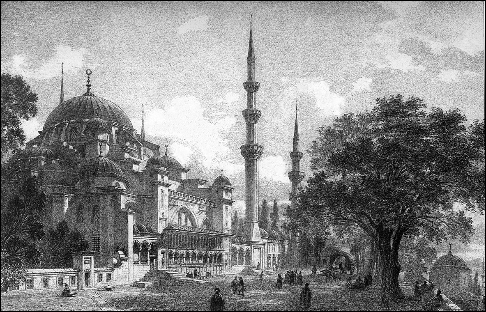

OSMANLI VE AKDENİZ DÜNYASI
Osmanlı İmparatorluğu Marmara Bölgesi’nde küçük bir beylik olarak doğdu, gelişti; fakat bu ilk yılların üzerinden daha 100 yıl geçmemişti ki Balkanlar’da ve Ege’de hâkimiyeti tesis etti ve bu Balkan hâkimiyeti hemen hemen bugünkü Bulgaristan ve Yunanistan’ın tamamını kapsadı. Çok kısa bir süre sonra Adriyatik, Tuna Nehri, Karadeniz kıyıları ve Mezopotamya’ya kadar uzandı. İkinci asrında Akdeniz’in batı yakası hariç, kuzeyi ve Kuzey Afrika da dahil çepeçevre saran bir imparatorluk olmuştu. Yani başka bir deyişle, gerek müesseseleri, gerek hayatı, gerek üniversalist hâkimiyet anlayışı ve gerek coğrafyası itibariyle bir Üçüncü Roma idi.
Akdeniz dünyası üzerinde kurulu olan Osmanlı İmparatorluğu bu bölgenin son muhteşem imparatorluğuydu ve onu bütün kültürleri, bütün mirasıyla birlikte barındıran ve çağdaş dünyaya taşıyan, asıl tarihî vazifesi de bu olan bir devletti, bir Akdeniz imparatorluğuydu.
Nedir bu Akdeniz dünyası? Akdeniz hiç şüphe yok yeryüzü tarihinde, insanlık tarihinde her şeyden evvel bir kültür çevresidir. Yani Almanlardan alınan ödünç bir kelimeyle “Kulturkreis”dır. Dünyada başka kültür çevreleri de vardır. Hint dünyası gibi, Çin gibi. Çin, yazısıyla ve ananeleriyle bulunduğu bölgede modellik etmiştir. Fakat hiç şüphe yok ki dünya ile bağlantısı kopuktur. Sınırlı ticarî ilişkiler dolayısıyla pragmatik bir şekilde, ipeğiyle, çok sonraları barutuyla, kâğıdıyla belirli katkıları olmuştur. Ama beşeriyetin ortak macerasında Çin dilinin, Çin yazısının, Çin tefekkürünün, hatta bizzat Çin’in büyük bir payı olduğunu, katkısı olduğunu söylemek mümkün değildir. O ayrı bir kültür çevresidir ve zamanımıza kadar da, dünyanın diğer kesimleriyle ana arterlerini bağlamak konusunda son derece sınırlı davranmıştır. Bundan sonra ne olacağını bilemeyiz.
Gene Hindistan, kültürü dolayısıyla en azından insanlığa sıfırı, aritmetik işlemlerindeki sıfırı öğreten bir kültür olması dolayısıyla önemlidir. Fakat bu Hindistan’ı çeviren muazzam Hint Okyanusu ve kuzeyindeki dağlar dolayısıyla dış dünyayla teması her zaman sınırlı kalmıştır. Buna rağmen Helenizm döneminde, İskender seferleri sırasında bir Yunanlılık tespiti mümkündür ve gene aynı şekilde Mezopotamya ve İran’ın üzerinde Hindistan’ın matematiğiyle, tefekkürü ile, lisan katkılarıyla bir payı olduğunu düşünmemiz gerekir.
Asıl Ortadoğu dünyası, yani Mezopotamya, Mısır, İran ve Anadolu hiç şüphesiz ki bugünkü uygarlığın kökünü oluşturmaktadırlar ve beşeriyet tarihinde Hz. İsa’dan beş bin yıl öncesinde buralarda ilk şehirler teşekkül etmiştir. İlk şehirlerin teşekkül etmesi demek, bu şehirler bir ziraî fazlaya dayanarak yaşayacağına göre, burada artık bildiğiniz anlamda zanaatlarla ziraatin meydana gelmesi demektir. Ve yeryüzü tarihinde neolitik devrim dediğimiz, yani cilalı taş devrine, kültürüne tekabül eden tarımcılık burada başlamıştır. Beşeriyetin bu yerleşmesi, toprağı ve tabiatı bu şekilde verimli olarak kullanmaya başlamasıyla da Ortadoğu medeniyeti, Mezopotamya ve Nil havzasında harikalar yaratmaya başlamıştır.
İnsanlık böylece şehir ve devlet safhasına ulaşmıştır. Çok ilginçtir, Akdeniz’in etrafındaki diller birbirine çok zıttır. Bir tarafta Sami diller, öbür tarafta Avrupa dilleri, onların muhtelif branşları ve bakarsanız bunlar çok değişik alfabelerle yazılmıştır. Ortadoğu tarihinde son iki bin yılın sadece alfabe konusundaki renkliliği bile, başka hiçbir yerle mukayese edilemez. Ne var ki bu alfabeler mantık olarak birbirinden çıkmıştır. Yani Latin ile Yunan’ın, Yunan ile Fenike’nin, Fenike ile birtakım Sami dillerin, alfabelerin fonetik ve fonemik biçimde düzenlenmesi, yani heceye dayanan işaretler olması dolayısıyla bir beraberlik görülmektedir.
Daha da garibi, birbiriyle alakası olmayan bu dillerin edebiyatı, benzerlikleri bir iken ikiye katlamıştır. Mezopotamya’nın en eski edebi dili Sümerce’nin, kendisinden sonraki Sami dillerle yapı olarak hiçbir akrabalığı yoktur. Ama bu dili sadece bugünün arkeologları, filologları değil o zamanların Samileri de biliyordu, Akkadlar da biliyordu, Babilliler de biliyordu. Sümerce metinleri kopya edip kütüphanelerde saklamak o uygarlığın başlıca aracıydı.
Bugün Güneydoğu Anadolu’da, Urfa’daki Sultantepe kazılarında, Sümerce Gılgamış metinleri bulunmuştur. Akkadlar Sümer şehirlerinde kazı yapıyorlar ve Sümer edebiyatını çivi yazısıyla kopya edip saklıyorlardı. Aynı keyfiyet Arî (Indo Avrupa) bir kavim olan Hititler için de söz konusudur. O çivi yazısı ki hem Sümer’in dili oluyor, çok ayrı etnik köklü bir dil, hem Samilerin dili oluyor. Asurlular, Babilliler, Aramiler ve hatta Hititliler vs. bu yazıyı yani çivi yazısı kullanıyorlar… Hint-Avrupa dalının İran gibi çok ayrı bir yönü de bu yazıyı kullanıyor. Demek ki Akdeniz ve çevresinde iki bin yılı aşkın bir süre aynı yazının kullanılması söz konusudur.
Nihayet Mısır’ın kültürü, inancı, tanrı anlayışı, tanrıları, mitolojisi başka kültürlere de geçmiştir. Bu temel yaklaşım yanında Akdenizliler çok erkenden birbirleriyle müessese alışverişi içine girmiştir. Ege bölgesinde MÖ 2000-1500 yıllarına ait Mısır eserleri bulunuyor. Ticaret çok canlı. Sadece Mısır eserleri mi? Mısır’ın dini, dinle ilgili kültürüne ait kalıntılar, mabetler bile var. Yahudilerin kavmî dininin, kendisinden sonraki tek tanrılı yapıları ne kadar etkilediği de var. Zıtlıkta bile beraberlik vardır. Sorunlar da ana inanışların aynıdır. İş bu kadarla da kalmıyor. Bu bölgelerin insanları birbirlerini çok erken tanıyorlar.
Tercüme dünyada Rönesans ile başladı sanılıyor, çok yanlış… Tercüme Mezopotamya ve Mısır’da çok erken zamanlardan beri yapılıyordu. Gılgamış Efsanesi, Yaratılış Efsanesi, Mısır’a ait birtakım hikâyeler ve bizatihi Tevrat’ın sayısız çevirisi bunu göstermektedir. Ortadoğu tercümeler diyarıdır. Sadece M.Ö 3000 ve 2000’lerde değil, Helenistik devrinden sonra milada yakın dönemlerde de bütün Yunan ve Süryani edebiyatının Arapça’ya taşınması, ardından Arapça üzerinden İbranca’ya ve Latince’ye taşınması gibi yeryüzü tarihinin en büyük tercüme faaliyeti Ortadoğu ve Akdeniz’de gerçekleştirilmiştir.
Dolayısıyla Akdeniz milletlerinin yaşamlarında, inançlarında, gramerlerinde, alfabelerinde büyük bir benzerlik, hatta bir birliktelik vardır. Bu birlikteliğin çok enteresan tezahürleri söz konusudur. Roma, ancak Julius Caesar’ın Mısır’ı almasından sonra bir imparatorluk olmuştur. Bu söylenir; yani Mısırlıların devlet yönetimindeki incelikler, bilhassa malî sistemleri, vergilendirme teknikleri Mısır’dan alınmış ve Roma’da gerçek anlamda maliyeyi yaratmış, Roma ondan sonra gerçek imparatorluk olmuştur.
Akdeniz milletleri birbirinin ürünüyle geçinir. Mısır’ın tahıl ve pirinci Roma İmparatorluğu’nu, Bizans’ı ve Osmanlı’yı beslemiştir. Çok sonraları Dobruca’nın hayvanları, koyun ve sığır türleri aynı şekilde İstanbul’u beslemiştir. Demek ki böyle bir yakınlık vardır. Suriye her zaman için lüks eşyanın menbaıdır. Lübnan’ın sedir ağaçları, bütün Akdeniz’in gemi sanayiini etkilemiştir, dolayısıyla böyle bir iktisadi birlik içinde, dini inanışlar kavga etse bile, aynı inanıştan ve felsefî yapıdan dolayı birleşebilmişlerdir.
Bunun ifadesi kendini 8. ve 13. asırlarda Endülüs kültürü ile göstermiştir. Müslümanlar, Yahudiler ve yerli Hıristiyanlar ortak bir dilin, Arapçanın ve ortak bir felsefenin etrafında birleşmekte ve bir ortak uygarlığı ortaya koyabilmektedirler ki buna da Endülüs Rönesansı denir ve 15. asırda Katolik istilası ile sona erdiğine de hiç şüphe yoktur. Nitekim 11. asrın Endülüslü ünlü kadısı Ahmed el-Endalusi, uygarlığı oluşturan milletler olarak kimleri sayıyor? Yunanlılar diyor, İbraniler diyor, İranlılar diyor, Romalılar diyor, Araplar diyor, Hintliler diyor; Çinliler ve Türkleri bu medeniyete pek katkısı olmayan, ama pragmatik ve pratik olarak yararlı adamlar diye niteliyor. Bunun dışındakiler coğrafyaları dolayısıyla medeniyete katkıları olan topluluklar değildir. O asrın şartlarını düşünürseniz bu doğrudur, ama ilginç bir şey vardır. Daha o asırda bile insanlar, bir ortak Akdeniz uygarlığından bahsedebilmektedirler.

Beyazıt Kulesi’nden İstanbul (Önde Süleymaniye Camii.) William Henry Bartlett.
Dinler ve etnik bölünmelerin dışında, İlhanlılar devrinin ünlü tarihçisi, Cami-üt-Tevarih adlı kitabında dünya tarihini yazan Reşidüddin bütün bu unsurları ithal etmektedir. Ve nihayet birçok insanın düşüncesine göre tarihçilik ve tarih sosyolojisinin hem babası, hem de torunu olan İbn-i Haldun o ülkenin verdiği mantık ve araştırma kültürüyle de bütün kavimlerin tarihini okudu ve öğrendi. Sadece Arapların değil, Romalıların, Türklerin hatta zamanın hahamlarının da bilmediği Yahudi tarihini Flavius İosephus gibi Roma devri Yahudilerinin eserlerinden okudu. “Mukaddime” eskimeyen bir klasik ama onun giriş yaptığı, “Kitab-ul Haber” adıyla kaleme aldığı umumi tarih de o derece de değerli.
1492’den sonraki İspanya, Yahudilerini ve Araplarını yani işe yarayan üretken nüfusunu sürdü ve öldürdü. Bunlar en çok Osmanlı’ya sığındılar. İstanbul, Selanik ve Rumeli’nin ücra şehirleri Kastorya ve Akdeniz adaları şenlendi. İspanya ise Amerika’dan yağmaladığı altınlara rağmen, mal üretemediğinden tarihte enflasyon canavarına teslim olan ilk ülkedir.
Akdeniz medeniyetinin son safhasını Türkler teşkil eder. Yapılan iş Doğu ile tekrar birleşmektir. Emeviler ve Abbasiler devrinde olduğu gibi, bilhassa Yavuz Sultan Selim’in Mısır seferinden sonra böyle olmuştur. Bu bölgedeki İtalyan cumhuriyetlerinin etkisi azaltılmıştır. Bu İtalya için sarsıcı bir başlangıçtır; ama Akdeniz’in doğu tarafı tekrar bir birleşme ortamına girmektedir. Ve 18. yüzyıla, yani Batı’da sanayi medeniyeti kurulup, onlar artık buhar gücüyle Akdeniz’e nüfuz edene kadar da bu böyle devam edecektir.
Akdeniz 18. ve 19. yüzyıllarda gerilemiş, dünyadaki en önemli birleştirici sentezlerini kaybetmeye başlamıştır. Bugün ne olacaktır? Bunu tespit etmek çok güçtür. Akdeniz’in çöküşünü, Osmanlı İmparatorluğu yavaşlatmıştır. Tarihteki rolü budur. Yani bu imparatorluğun kurulması, bütün Kuzey Afrika’ya, Doğu Akdeniz’e hükmetmesi sonucunda, Akdeniz bölgesinin gerilemesi yavaşlamıştır. 19. yüzyıldan sonra tekrardan dirilen, dünyaya intibak etmeye çalışan Akdeniz’in bundan sonra ne yapacağını bilemiyoruz. Denizin kuzeyinde nüfus azalırken güneyinde artmaya devam ediyor. Büyük çatışmalar, gerilimler ve farklılıklar ortaya çıkıyor. Osmanlı’nın ölüsü kendini her yerde gösteriyor. Vakıa Napoléon’un Mısır seferinden beri Akdeniz havzasında Osmanlı hâkimiyeti yavaş yavaş gerilemeye, bunun kalıcı, tahripkâr etkileri kendisini göstermeye başlamıştır.
Topkapı Sarayı birinci kapısı.
Osmanlı İmparatorluğu, 1300-1304 gibi bir tarihte kurulmuş sayılıyor. Tabii böyle bir devletin kuruluşunun, noter tasdikiyle tarihini belirlemek mümkün değildir. İlk elli sene içinde Marmara ve Trakya havzasında kuruluyor. Burada bir Marmara iktisadî ünitesi söz konusudur. Edirne’nin fethinden sonra Doğu Sırbistan, Güney Bulgaristan, Makedonya ve bugünkü Kuzey Yunanistan dediğimiz coğrafyaya yayılıyor. 1400’lerden sonraki dönemde buradaki hâkimiyet berkitiliyor.
Fakat Osmanlı tarihinin en üniversal zihniyetli, Roma İmparatoru karakterini, portresini en çok taşıyan hükümdarı II. Mehmed döneminde, idare itibariyle üniversalist yapıya ulaşılmıştır. Kıbrıs ve Girit gibi fütuhatla da aşağı yukarı 17. yüzyılda Akdeniz hâkimiyeti tamamlanmıştır. Kim ne derse desin, Kanunî Sultan Süleyman döneminde Osmanlı İmparatorluğu Akdeniz’de yalnız değildir, bu bölgeyi batıdaki İspanya Habsburgları ile paylaşmaktadır. Ama Akdeniz dünyasının egemen kuvveti durumundadır ve bu iki asırlık, iki buçuk asırlık dönem içerisinde imparatorluğun Akdenizli vasfını kazandığını görüyoruz. Osmanlı’da, Altınordu veya Orta Asya’daki Timur İmparatorluğu gibi Türk devletlerine göre sadece Batı dünyası ile bazı ortak müşterekler değil, fakat daha ziyade Akdeniz dünyasının ve bir Akdeniz imparatorluğunun özellikleri göze çarpmaktadır. Bu bizim tarihimizin bugünü oluşturan, bugünkü Türkiye’yi ve Türk toplumunu oluşturan en önemli çizgilerinden biridir.
OSMANLI İMPARATORLUĞU’NDA MİMAR SİNAN DEVRİ
Kanunî Sultan Süleyman’ın hükümdarlığını tarihçiler imparatorluğun en parlak devri olarak ele almışlar, dönemin kurumları ve toplum düzeni genel bir eğilim olarak imparatorluk tarihinin klasik devri diye nitelendirilmiştir. Bu genel eğilim nedeniyle Osmanlı toplumsal kurumlarının 15. yüzyıl sonuna kadarki gelişimi bir olgunluk dönemine ulaşmanın, sonrası da çürüme ve bozulmanın safhaları olarak ele alınmıştır. Kuşkusuz Osmanlı İmparatorluğu’nun idarî ve toplumsal hayatını bu biçimde yorumlamak hiç değilse son yıllarda terk edilmeye başlandıysa da, özellikle 16. yüzyıl Osmanlı mimarisini ve yapı örgütünü bütün Türkiye kültür tarihi içinde en orijinal ve soylu devir diye ele almak eğilimi sürmektedir.
Türk sanatı veya Türkiye sanatı gibi bir yaklaşım izlendiğinde bu tür bir değerlendirme de kuşkusuz tartışma götürür. Bu tartışma götürürlüğe rağmen, kabul edilmesi gereken bir gerçek, Mimar Sinan döneminin gerek Osmanlı mimarisi, gerekse dünya mimarisi için gösterdiği önemdir. Bu dönemin iktisadî, kültürel ve toplumsal şartları etraflıca incelenmedikçe bu olgunun yeterince kavranılamayacağı da açıktır.
Mimar Sinan baş mimar olduğunda ve olmadan önce de mesleğinde yetişirken, bu imparatorluk bir Balkan imparatorluğu olma yanında bir Ortadoğu İmparatorluğu da olmuştu. Hatta 200 yıldır kazandığı ve koruduğu birinci niteliği, ikincinin içinde erimeye başlamıştı. İki yüzyıldan beri Balkan İmparatorluğu olma niteliğini, tarihin akışı ve doğal kültür ilişkileri içinde yavaş yavaş kazanan Osmanlılar, şimdi bilinçli bir biçimde Ortadoğu-İslâm imparatorluğu tipine dönüşmekteydiler. Devletin ulema ve ümerası, adeta belirgin ve gayretli bir politika içinde bir tür Ortadoğu-İslâm rönesansı yaratıyorlardı. 14. ve 15. yüzyıllara ait Osmanlı vekayiname ve nasihatname edebiyatında, 16. yüzyılda olduğu kadar eski İslâm devletlerini, İslâm toplum ahlâkını, İslâm arazi ve maliye sistemini nakleden kaynaklara atıflar yapıldığı ve başvurulduğu söylenemez. Daha önce pragmatik bir yaklaşım ve yaşayan geleneklere Doğu devlet literatürü okunur ve toplum sistemi benimsenirken, şimdi daha bilinçli bir biçimde İslâm-Ortadoğu modeli ele alınıyordu.
Devletin sınırları Globus Ottomanorum kavramıyla anlatılıyordu. Batıda Transilvanya ve Macaristan’dan başlayan Osmanlı ülkeleri bütün Tuna havzasını Karadeniz’e kadar izlemekte, güneyde Dalmaçya kıyıları, Akdeniz adaları ve tüm Pelepones-Mora’yı içermekteydi. Kuzeydeki sınır Podolya, Eflâk-Boğdan üzerinden Kırım yarımadasını da içererek Ukrayna steplerine kadar uzanmaktaydı. Bu geniş alan, imtiyazlı beylikler, himaye altındaki devletler, merkeze bağlı tımar rejimi uygulanan eyaletlerle birlikte Rumeli bölümünü meydana getirmekteydi. Doğuda, Azerbaycan ve Luristan’dan başlayan sınır güney Kafkasya’yı, kuzey Kafkasya’daki bazı bağımlı devletçikleri, nihayet tımar rejimi altında tüm Anadolu kıtasını, El Cezire, Suriye ve aşağı Mezopotamya’yı kapsıyordu. Arabistan ve imtiyazlı beylik statüsündeki Hicaz topraklarını da göz önünde tutarsak imparatorluğun Asya kıtası mülkleri kabaca belirlenir. Afrika’da ise Mısır, Habeşistan’ın bir bölümü, “Garb ocakları” denen Trablusgarb (Libya), Tunus, Cezayir gibi bağımlı devletçikleri sayarsak imparatorluğun kompozisyonu tamamlanmış olur.
Bütün bu alanda yaşayan nüfus, dil, din ve ırk olarak tarihteki büyük imparatorlukların çok azında görülen bir çeşitliliğe sahipti. Geleneksel Osmanlı Devleti, “British Commonwealth” değildi. İmparatorluk ülkelerinin ve halklarının hepsi rengini ve varlığını sürdürüyordu. Bu birimlerin homojen bir malî-idarî yapıya da sahip olmadığını belirtmek gerekir. Her dini cemaat kendisi için ve kendi içinde yaşıyordu. Şeriat’ın renkliliği yanında örfî hukuk her vilayetin ayrı toprak kanunları, her dinî cemaatin kendi hukuku yürürlükteydi. Rum-Ortodoks cemaati son devir Bizans hukukunu kullanıyordu.
İmparatorluk büyüktü, ama anlaşılan Yeniçağ’ın büyük imparatorlukları gibi zengin değildi. Daha doğrusu imparatorluğun zenginliğini doğuran kaynaklar, bu zenginliği kullanan sınıflar, bu zenginliğin kullanılış tarzı ve günlük yaşama yansıyışı çağdaş imparatorluklarınkinden çok farklıydı. Avrupa, tüccarların zenginleştiği ve şehirlerin idaresini elde ettiği, iflas eden imparator hazinelerine borç vererek devlet yönetimini etkiledikleri bir dünya idi. Bütün yaşayış biçimi, kent düzeni, sanat zevki, mimarî yükselen burjuvaziye hitap ediyordu. Şehirlerin güzel binaları tüccar saraylarıydı, belediye binalarıydı. Ticaret yolları ve hanlar, antrepo mimarisi gelişiyordu. 16. yüzyılda bu burjuvalaşan Avrupa’dan Osmanlı ülkesine gelen Schwebenli Alman papaz Schweigger, “Bütün sahte dindarlar gibi Türkler de Tanrıyı aldatmak için mabetlerini büyük, güzel ve süslü yapıyor. Bizim aksimize oturdukları evlere hiç dikkat etmezler” diyor.
Osmanlı tüccarı ve zenaat erbabından hiç kimse bu imparatorluğun tüketim normlarına, kültürüne ve yaşam tarzına etki yapacak durumda değildi. 1500’lerde bir sancak beyinin yıllık geliri 12000 altın duka civarında iken, Bursa’nın en zengin tüccarının terekesinden 4000 altın çıkmıştı. Zenginlik ve parlak yaşayış büyük imparatorlukta Batı Avrupa toplumlarındaki gibi ortaya çıkmıyordu. Sözünü ettiğimiz Salomon Schweigger “Paşaların ve beylerin evleri çok kötüdür. Binalarda fazla ihtişam yoktur, kanunlar pahalı ev ve şato inşasına müsaade etmiyormuş, kötü bir ev bile 1000 dukaya çıkar. Böylesi bizde 300 Guldeni geçmez” demektedir.
Evlerin yüksekliğinin ve kaplayacakları alanın sert kanunlarla tesbit edildiği bir toplumdur bu. Mimarlar zengin konut mimarisi, parklar ve özel hanların yapımıyla uğraşmaz. Bizzat mimarbaşı, genişçe tutulmuş ve yüksekçe yapılmak istenen binalara ruhsat vermemek ve izinsiz olarak büyük yapılanları yıktırmakla görevlidir çünkü…
Peki bu toplumda mimarlar zaptiyelik dışında bir şey yapmıyorlar mıydı, yahut da faaliyetleri çok sınırlı bir alanda mı kalmıştı? Şüphesiz hayır. Osmanlı mimarı kamusal anıtları ve tesisleri yaratmakla yükümlüydü ve bu yükümlülük onun faaliyet alanının, sanatçı kişiliğinin ve eğitiminin çok farklı bir açıdan değerlendirilmesini gerektirir.

Süleymaniye Camii. Eugene Flandrin.
Geleneksel toplumda mimarlık basit bir lonca faaliyeti değildir. Gerek fonksiyonları, gerekse örgütleniş biçimi ve yetkileriyle mimar, uzman bir bürokrattır ve yönetici sınıf üyesidir. Kentsel alandaki altyapı tesisleri, ulaşım teknolojisinin düzeyi, ekonomik faaliyetlere dayalı mekân organizasyonu, yapı malzemesi, inşaat işçi ve ustalarının sayısı ve bölgesel dağılımı, azınlık cemaatlerin oturduğu bölgelerdeki mekân sınırlaması ve buradaki farklı yapı denetimi, mimarlığın üstlendiği görevlerdir. Klasik Osmanlı teşkilâtında mimarlık askerî bir görevdir. Mimar, asker ocağında (Kapıkulu ocaklarında) yetişir. Kendilerine hassa mimarları denir. Komutanları da hassa başmimarıdır.
Kanunî devrinin Osmanlı İmparatorluğu’nda Tuna’dan Fırat’a, Ukrayna’dan Afrika çöllerine kadar yapılan her seferde yolları ve su yollarını onarmak ve yapmak, köprüler kurmak, konaklama tesislerini denetlemek onun görevidir. Yetiştiği dönemde hiç kimse mimar kadar üç kıtadaki ülkelerin yapı zanaatını ve plastik sanat eserlerini yakından tanımaz. Kentlerin imar denetimi onun görevidir. Nihayet kentleri süsleyen anıtsal kamu binaları onun eseri olacaktır. Bu eserleri yaparken kendisine yardımcı olan taşçı, doğramacı, camcı, boyacı, badanacı gibi zenaatçılar Ortadoğu ve Balkanlar bölgesinin 5000 yıllık şehir kültürünün yaratıp yetiştirdiği muhtelif dinden ve etnik gruptan kimselerdir.
Kanunî devrinin büyük eseri Süleymaniye Camii yapılırken bu rengarenk Babil Kulesi kalabalığı o binayı yükseltmişlerdir. Çünkü Mimarbaşı Sinan Ağa bütün meslektaşları gibi, imparatorluğun dört bir yanından her gruptan yapı ustası ve işçisini celbettirebilmektedir. Sadece emek sahiplerini değil, malzemeyi de…
Böyle bir ortamda Sinan’ın yetişmesi ve bir okul kurması, imkân dahiline girmektedir. Doğum yeri ve ailesi tanınmayan bu yeniçeriye gâh Kapadokya (Kayseri) bölgesinden bir Hıristiyan veya Türk, gâh Bulgaristan Rodoplarından bir Bulgar denir. Eldeki vesikalarla bu durumun kesin olarak tespiti mümkün değildir ve önemli de değildir.
Koca Sinan, Osmanlı mimarıdır. Osmanlı mimarisi bir imparatorluğun mimarisidir. Bu imparatorluk Ortadoğu ve Balkanlar’ın imparatorluğudur ve tarihteki iki benzerinin, Roma’nın ve Bizans’ın mimarisiyle aynı paralelde olduğu halde Yeniçağ dünyasında şaheserlerini yaratmıştır. Onun hakim kültürü ne salt Anadolu’nun, ne de Rumeli’nindir. O mimarî, insanların günlük yaşama mekânını düzenlemekten çok, bir kamusal görkemi ve devlet çarkını döndürecek gerekleri yerine getirir.
Osmanlı mimarisinde dar ulusal bir nitelik ve kaynak aramak boşunadır. Nasıl Osmanlı tarihi üç kıtadaki ülkelerin ve halkların yazgılarıyla ördükleri bir duvara benzerse, Osmanlı mimarisi de bu tarihin zamanda ve mekândaki müşterekliğinin bir sembolüdür.
Mimar Sinan’ın üslûbu onun öğrencileriyle 17. yüzyılda da sürdü, sonra eridi. Çünkü 18. yüzyıl Osmanlı dünyası 16. yüzyıldaki kadar geniş ve renkli değildi. 18. yüzyılın mimarı bir-iki yüzyıl önceki ocaklı yoldaşları gibi geniş bir dünyayı tanıyamıyordu. Fazladan yöneticiler, sanatçılar ve halk artık imparatorluk mimarisine değil, çağın gerektirdiği bir mimarlık sanatına ihtiyaç duyuyorlardı. 18. yüzyılda Balkan Rönesansı, İstanbul’daki Osmanlı Barok çağı yeni bir dönemin ve yeni bir mimar tipinin doğmak üzere olduğunu gösteren belirtilerdir.